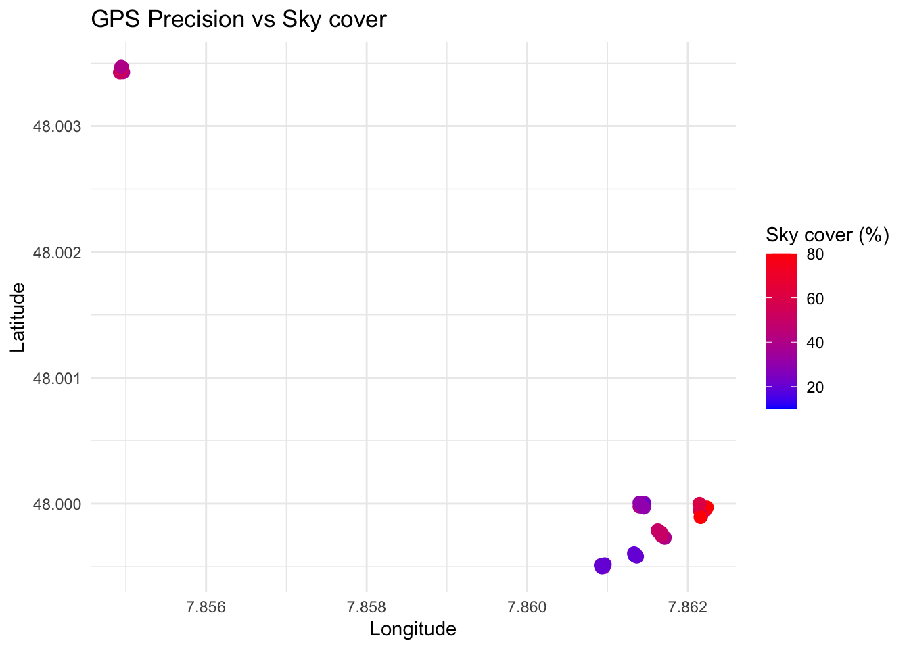

#install.packages(c("ggplot2", "leaflet", "dplyr", "readr", "sf"))aftermath_03
Aftermath to exercise 03_gnss
Step 1: Install Required Libraries
You’ll need some libraries in R for handling CSV files, spatial data, and interactive plotting. You can install them using:
Step 2: Load and Prepare Your Data
First, load your data from the CSV files. You can use the readr package to read CSV files.
library(readr)
library(dplyr)
Attaching package: 'dplyr'The following objects are masked from 'package:stats':
filter, lagThe following objects are masked from 'package:base':
intersect, setdiff, setequal, union# Assuming your CSV files are in a directory called "data"
# You can read multiple CSV files into a list and combine them
file_list <- list.files(path = "/Users/maximilianfabi/Desktop/_repos/bsc_2024_25_teaching_inventur_und_geomatik/04_accuracy_inventory/data/csv-files", pattern = "*.csv", full.names = TRUE)
# Read and combine all the CSV files
data <- lapply(file_list, read_csv) %>%
bind_rows()Rows: 6 Columns: 8── Column specification ────────────────────────────────────────────────────────
Delimiter: ","
chr (1): Title
dbl (6): Latitude, Longitude, Northing, Easting, Description, Elevation
dttm (1): Date Created
ℹ Use `spec()` to retrieve the full column specification for this data.
ℹ Specify the column types or set `show_col_types = FALSE` to quiet this message.
Rows: 6 Columns: 8
── Column specification ────────────────────────────────────────────────────────
Delimiter: ","
chr (1): Title
dbl (6): Latitude, Longitude, Northing, Easting, Description, Elevation
dttm (1): Date Created
ℹ Use `spec()` to retrieve the full column specification for this data.
ℹ Specify the column types or set `show_col_types = FALSE` to quiet this message.
Rows: 6 Columns: 8
── Column specification ────────────────────────────────────────────────────────
Delimiter: ","
chr (1): Title
dbl (6): Latitude, Longitude, Northing, Easting, Description, Elevation
dttm (1): Date Created
ℹ Use `spec()` to retrieve the full column specification for this data.
ℹ Specify the column types or set `show_col_types = FALSE` to quiet this message.
Rows: 6 Columns: 8
── Column specification ────────────────────────────────────────────────────────
Delimiter: ","
chr (1): Title
dbl (6): Latitude, Longitude, Northing, Easting, Description, Elevation
dttm (1): Date Created
ℹ Use `spec()` to retrieve the full column specification for this data.
ℹ Specify the column types or set `show_col_types = FALSE` to quiet this message.
Rows: 6 Columns: 8
── Column specification ────────────────────────────────────────────────────────
Delimiter: ","
chr (1): Title
dbl (6): Latitude, Longitude, Northing, Easting, Description, Elevation
dttm (1): Date Created
ℹ Use `spec()` to retrieve the full column specification for this data.
ℹ Specify the column types or set `show_col_types = FALSE` to quiet this message.
Rows: 6 Columns: 8
── Column specification ────────────────────────────────────────────────────────
Delimiter: ","
chr (1): Title
dbl (6): Latitude, Longitude, Northing, Easting, Description, Elevation
dttm (1): Date Created
ℹ Use `spec()` to retrieve the full column specification for this data.
ℹ Specify the column types or set `show_col_types = FALSE` to quiet this message.# Preview the combined data
head(data)# A tibble: 6 × 8
Title `Date Created` Latitude Longitude Northing Easting Description
<chr> <dttm> <dbl> <dbl> <dbl> <dbl> <dbl>
1 A 2024-10-10 08:05:42 48.0 7.86 0 0 6
2 B 2024-10-10 08:07:24 48.0 7.86 0 0 5
3 C 2024-10-10 08:09:32 48.0 7.86 0 0 2
4 D 2024-10-10 08:10:34 48.0 7.86 0 0 2
5 E 2024-10-10 08:11:35 48.0 7.86 0 0 3
6 F 2024-10-10 08:15:35 48.0 7.85 0 0 4
# ℹ 1 more variable: Elevation <dbl>Step 3: Preprocess Data
Make sure the data is in the right format, especially converting the “Description” (sky cover) and “Title” (points) columns:
# Convert the cover to a percentage
data <- data %>%
mutate(sky_cover = as.numeric(Description) * 10) # Convert to percentage
# Remove rows with missing or invalid latitude/longitude
data <- data %>%
filter(!is.na(Latitude), !is.na(Longitude))
# Calculate the average sky cover for each point (group by Title)
data <- data %>%
group_by(Title) %>%
mutate(avg_sky_cover = mean(sky_cover, na.rm = TRUE)) %>%
ungroup()
# Preview the cleaned data
head(data)# A tibble: 6 × 10
Title `Date Created` Latitude Longitude Northing Easting Description
<chr> <dttm> <dbl> <dbl> <dbl> <dbl> <dbl>
1 A 2024-10-10 08:05:42 48.0 7.86 0 0 6
2 B 2024-10-10 08:07:24 48.0 7.86 0 0 5
3 C 2024-10-10 08:09:32 48.0 7.86 0 0 2
4 D 2024-10-10 08:10:34 48.0 7.86 0 0 2
5 E 2024-10-10 08:11:35 48.0 7.86 0 0 3
6 F 2024-10-10 08:15:35 48.0 7.85 0 0 4
# ℹ 3 more variables: Elevation <dbl>, sky_cover <dbl>, avg_sky_cover <dbl>Step 4: Visualize with ggplot2
Now you can create a plot using ggplot2 to show how GPS precision varies based on sky cover. For example, you might use a scatter plot where each point is colored by the level of sky cover:
library(ggplot2)
ggplot(data, aes(x = Longitude, y = Latitude, color = sky_cover)) +
geom_point(size = 3) +
scale_color_gradient(low = "blue", high = "red") + # Color scale for cover
theme_minimal() +
labs(title = "GPS Precision vs Sky cover",
color = "Sky cover (%)",
x = "Longitude", y = "Latitude")
Step 5: Add Interactive Map with leaflet
For an interactive experience, you can use leaflet to plot the points on a map. This will allow zooming and panning to explore the GPS points.
library(leaflet)
leaflet(data) %>%
addTiles(options = tileOptions(maxZoom = 22)) %>%
addCircleMarkers(~Longitude, ~Latitude,
color = ~colorNumeric("YlOrRd", sky_cover)(sky_cover),
popup = ~paste("Title:", Title, "<br>", "Sky cover:", sky_cover, "%")) %>%
addLegend("bottomright", pal = colorNumeric("YlOrRd", data$sky_cover),
values = data$sky_cover,
title = "Sky cover (%)",
opacity = 1)library(leaflet)
library(RColorBrewer)
# Generate a color palette for each unique Title
color_palette <- colorFactor(palette = brewer.pal(n = length(unique(data$Title)), "Set1"), domain = data$Title)
# Create the leaflet map
leaflet(data) %>%
addTiles(options = tileOptions(maxZoom = 22)) %>%
# Add circle markers, colored by Title
addCircleMarkers(
~Longitude, ~Latitude,
color = ~color_palette(Title),
popup = ~paste("Title:", Title),
radius = 6
) %>%
# Add a legend for the Title colors
addLegend(
"bottomright",
pal = color_palette,
values = data$Title,
title = "Point name",
opacity = 1
)library(geosphere) # For calculating distances in meters
# Calculate the centroid (mean latitude and longitude) for each point (Title)
centroid_data <- data %>%
group_by(Title) %>%
summarise(
centroid_lat = mean(Latitude),
centroid_lon = mean(Longitude)
)
# Directly calculate the distance from each point to its centroid using centroid data
data <- data %>%
rowwise() %>%
mutate(
# Find the corresponding centroid for this point
centroid_lat = centroid_data$centroid_lat[centroid_data$Title == Title],
centroid_lon = centroid_data$centroid_lon[centroid_data$Title == Title],
# Calculate distance to the centroid
distance_to_centroid = distGeo(c(Longitude, Latitude), c(centroid_lon, centroid_lat)) # Distance in meters
)
# Calculate variance of distance from centroid for each point (in meters) and include sky cover
variance_data <- data %>%
group_by(Title, avg_sky_cover) %>% # Include Description (sky cover)
summarise(
variance_distance = var(distance_to_centroid), # Variance of distance in meters
avg_distance = mean(distance_to_centroid), # Mean distance to centroid
sky_cover = first(Description) # Keep the sky cover value for each point
)`summarise()` has grouped output by 'Title'. You can override using the
`.groups` argument.# Preview the variance data
print(variance_data)# A tibble: 6 × 5
# Groups: Title [6]
Title avg_sky_cover variance_distance avg_distance sky_cover
<chr> <dbl> <dbl> <dbl> <dbl>
1 A 65 3.23 4.38 6
2 B 48.3 2.71 2.75 5
3 C 18.3 0.450 1.15 2
4 D 21.7 0.633 1.28 2
5 E 30 1.31 2.18 3
6 F 45 0.536 2.10 4# Plot: Sky cover vs Variance in GPS Precision
ggplot(variance_data, aes(x = avg_sky_cover, y = avg_distance)) +
geom_point(color = "blue", size = 3) + # Plot points for variance
geom_smooth(method = "lm", se = FALSE, color = "red") + # Add a trendline
geom_text(aes(label = Title), hjust = 2, vjust = 2, size = 3) + # Add point names
theme_minimal() +
labs(title = "Average distance to centroid in GPS Precision vs Average Sky cover",
x = "Sky cover (in %)",
y = "Average distance (meters) from centroid")`geom_smooth()` using formula = 'y ~ x'